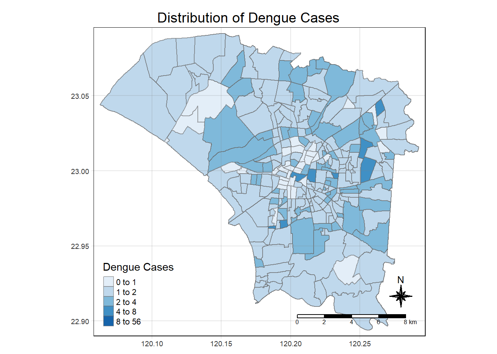
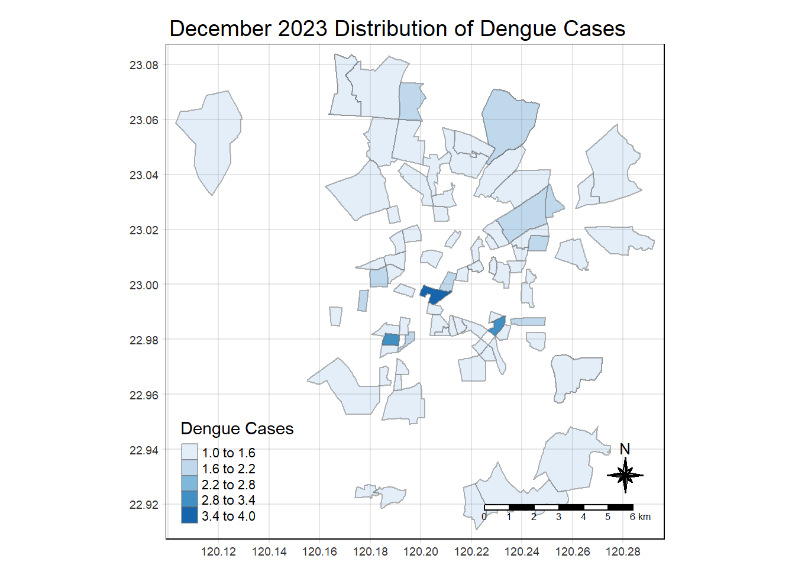
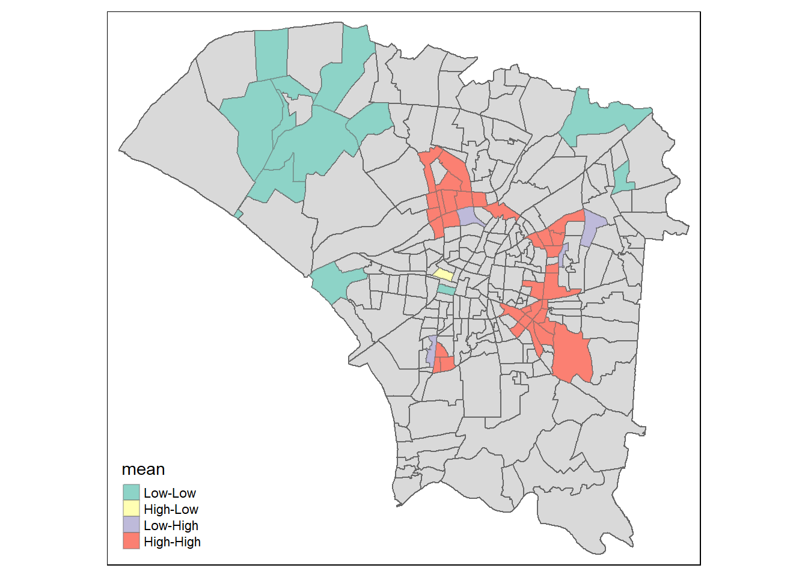

pacman::p_load(sf, sfdep, tmap, tidyverse, plotly)1.0 Getting Started
Background
In this study, our focus will be on investigating whether the distribution of dengue fever outbreaks in Tainan City, Taiwan, is independent of spatial and temporal factors. If the outbreak exhibits spatial and spatio-temporal dependencies, our goal is to pinpoint clusters, outliers, and emerging hot spot/cold spot areas within the region.
Objective
The primary objective of this study is to apply spatial and spatio-temporal analysis methods to discover the distribution of dengue fever in Tainan City, Taiwan. The results of the analysis will be useful for public health officials and policymakers to make informed decisions and implement targeted interventions to control the spread of dengue fever in Tainan City, Taiwan.
Packages Used:
sf: For importing, managing, and processing geospatial data.
tidyverse: Collection of packages for data science tasks.
tmap: For creating thematic maps, such as choropleth and bubble maps.
sfdep: Creating an sf and tidyverse friendly interface.
plotly: For creating interactive plots and maps.
2.0 Spatial Data Wrangling
2.1 Importing the spatial data
Aspatial Data
dengueDaily <- read_csv("../../data/TakeHome/TakeHome_02/aspatial/Dengue_Daily.csv")Geospatial Data
tainan <- st_read(dsn = "../../data/TakeHome/TakeHome_02/geospatial",
layer = "TAINAN_VILLAGE")Reading layer `TAINAN_VILLAGE' from data source
`C:\wanshen123\IS415-GAA\data\TakeHome\TakeHome_02\geospatial'
using driver `ESRI Shapefile'
Simple feature collection with 649 features and 10 fields
Geometry type: POLYGON
Dimension: XY
Bounding box: xmin: 120.0269 ymin: 22.88751 xmax: 120.6563 ymax: 23.41374
Geodetic CRS: TWD97head(tainan, 3)Simple feature collection with 3 features and 10 fields
Geometry type: POLYGON
Dimension: XY
Bounding box: xmin: 120.0936 ymin: 22.93251 xmax: 120.2905 ymax: 23.13561
Geodetic CRS: TWD97
VILLCODE COUNTYNAME TOWNNAME VILLNAME VILLENG COUNTYID COUNTYCODE
1 67000280002 臺南市 歸仁區 六甲里 Liujia Vil. D 67000
2 67000350032 臺南市 安南區 青草里 Qingcao Vil. D 67000
3 67000150009 臺南市 七股區 溪南里 Xinan Vil. D 67000
TOWNID TOWNCODE NOTE geometry
1 D33 67000280 <NA> POLYGON ((120.2725 22.95868...
2 D06 67000350 <NA> POLYGON ((120.1176 23.08387...
3 D22 67000150 <NA> POLYGON ((120.121 23.1355, ...2.2 Data Pre-Processing
Retrieve D01, D02, D04, D06, D07, D08, D32 and D39 counties of Tainan City, Taiwan.
filtered_tainan <- tainan[tainan$TOWNID %in% c("D01", "D02", "D04", "D06", "D07", "D08", "D32", "D39"), ]Visualizing the filtered Tainan map
tmap_mode('plot')
tm_shape(filtered_tainan) +
tm_polygons("TOWNID") 
Dengue fever cases confined to epidemiology week 31-50, 2023
Note
Convert date column to Date format if it’s not already
dengueDaily$發病日 <- as.Date(dengueDaily$發病日)Extract week numbers from the date column
dengueDaily$week_number_onsetDay <- as.numeric(format(dengueDaily$發病日, "%V"))Define the start (31) and end (50) weeks of your range
onset_start_week <- 31
onset_end_week <- 50Define the year
year <- 2023Filter rows based on the week range
filtered_dengue <- dengueDaily[dengueDaily$week_number_onsetDay >= onset_start_week & dengueDaily$week_number_onsetDay <= onset_end_week & year(dengueDaily$發病日) == year, ]2.3 Data Cleaning
Translate to English
filtered_dengue <- filtered_dengue %>%
rename('x-coordinate' = 最小統計區中心點X,
'y-coordinate' = 最小統計區中心點Y,
'COUNTYNAME' = 居住縣市,
'VILLNAME' = 居住村里,
'TOWNNAME' = 居住鄉鎮)Check the current class of the column
class(filtered_dengue$`x-coordinate`)[1] "character"class(filtered_dengue$`y-coordinate`)[1] "character"Convert the column to numeric
filtered_dengue$`x-coordinate` <- as.numeric(filtered_dengue$`x-coordinate`)
filtered_dengue$`y-coordinate` <- as.numeric(filtered_dengue$`y-coordinate`)Check the class of the column after conversion
class(filtered_dengue$`x-coordinate`)[1] "numeric"class(filtered_dengue$`y-coordinate`)[1] "numeric"Remove NA values from all columns
filtered_dengue <- na.omit(filtered_dengue)Convert to an sf object with POINT geometry
filtered_dengue1 <- st_as_sf(filtered_dengue, coords = c('x-coordinate', 'y-coordinate'), crs = st_crs(filtered_tainan))Visualizing the distribution of dengue cases on the map
tm_shape(filtered_tainan) +
tm_polygons("TOWNID") +
tm_shape(filtered_dengue1) +
tm_dots(col = "black")Grouping village based on number of dengue cases
grouped_data <- filtered_dengue %>%
group_by(TOWNNAME, VILLNAME, week_number_onsetDay) %>%
summarise(dengueCases = sum(確定病例數))Removing missing values
grouped_data <- grouped_data[!(grouped_data$VILLNAME == "None"), ]Combining both data frame by using left join
joined_data <- left_join(filtered_tainan, grouped_data, by = c("TOWNNAME","VILLNAME"))2.4 Plotting a choropleth map
Before removing missing values
tmap_mode("plot")
tm_shape(joined_data) +
tm_fill("dengueCases",
style = "quantile",
palette = "Blues",
title = "Dengue Cases") +
tm_layout(main.title = "Distribution of Dengue Cases",
main.title.position = "center",
main.title.size = 1.2,
legend.height = 0.45,
legend.width = 0.35,
frame = TRUE) +
tm_borders(alpha = 0.5) +
tm_compass(type = "8star", size = 2) +
tm_scale_bar() +
tm_grid(alpha = 0.2)
Note
Missing values means that the dengue cases are not part of the selected counties.
To fill missing values (NA) with 0
joined_data$dengueCases[is.na(joined_data$dengueCases)] <- 0After removing missing values
tmap_mode("plot")
tm_shape(joined_data) +
tm_fill("dengueCases",
style = "quantile",
palette = "Blues",
title = "Dengue Cases") +
tm_layout(main.title = "Distribution of Dengue Cases",
main.title.position = "center",
main.title.size = 1.2,
legend.height = 0.45,
legend.width = 0.35,
frame = TRUE) +
tm_borders(alpha = 0.5) +
tm_compass(type = "8star", size = 2) +
tm_scale_bar() +
tm_grid(alpha = 0.2)
Visualizing the distribution of dengue cases by month
august <- joined_data %>%
filter(week_number_onsetDay >= 31 & week_number_onsetDay <= 35)
tmap_mode("plot")
tm_shape(august) +
tm_fill("dengueCases",
style = "quantile",
palette = "Blues",
title = "Dengue Cases") +
tm_layout(main.title = "August 2023 Distribution of Dengue Cases",
main.title.position = "center",
main.title.size = 1.2,
legend.height = 0.45,
legend.width = 0.35,
frame = TRUE) +
tm_borders(alpha = 0.5) +
tm_compass(type = "8star", size = 2) +
tm_scale_bar() +
tm_grid(alpha = 0.2)september <- joined_data %>%
filter(week_number_onsetDay >= 36 & week_number_onsetDay <= 39)
tmap_mode("plot")
tm_shape(september) +
tm_fill("dengueCases",
style = "quantile",
palette = "Blues",
title = "Dengue Cases") +
tm_layout(main.title = "September 2023 Distribution of Dengue Cases",
main.title.position = "center",
main.title.size = 1.2,
legend.height = 0.45,
legend.width = 0.35,
frame = TRUE) +
tm_borders(alpha = 0.5) +
tm_compass(type = "8star", size = 2) +
tm_scale_bar() +
tm_grid(alpha = 0.2)
october <- joined_data %>%
filter(week_number_onsetDay >= 40 & week_number_onsetDay <= 44)
tmap_mode("plot")
tm_shape(october) +
tm_fill("dengueCases",
style = "quantile",
palette = "Blues",
title = "Dengue Cases") +
tm_layout(main.title = "October 2023 Distribution of Dengue Cases",
main.title.position = "center",
main.title.size = 1.2,
legend.height = 0.45,
legend.width = 0.35,
frame = TRUE) +
tm_borders(alpha = 0.5) +
tm_compass(type = "8star", size = 2) +
tm_scale_bar() +
tm_grid(alpha = 0.2)
november <- joined_data %>%
filter(week_number_onsetDay >= 45 & week_number_onsetDay <= 48)
tmap_mode("plot")
tm_shape(november) +
tm_fill("dengueCases",
style = "quantile",
palette = "Blues",
title = "Dengue Cases") +
tm_layout(main.title = "November 2023 Distribution of Dengue Cases",
main.title.position = "center",
main.title.size = 1.2,
legend.height = 0.45,
legend.width = 0.35,
frame = TRUE) +
tm_borders(alpha = 0.5) +
tm_compass(type = "8star", size = 2) +
tm_scale_bar() +
tm_grid(alpha = 0.2)december <- joined_data %>%
filter(week_number_onsetDay >= 49 & week_number_onsetDay <= 50)
tmap_mode("plot")
tm_shape(december) +
tm_fill("dengueCases",
style = "quantile",
palette = "Blues",
title = "Dengue Cases") +
tm_layout(main.title = "December 2023 Distribution of Dengue Cases",
main.title.position = "center",
main.title.size = 1.2,
legend.height = 0.45,
legend.width = 0.35,
frame = TRUE) +
tm_borders(alpha = 0.5) +
tm_compass(type = "8star", size = 2) +
tm_scale_bar() +
tm_grid(alpha = 0.2)
Note
Areas that are white in colour are those that have no dengue cases.
3.0 Global Spatial Autocorrelation Analysis
3.1 Deriving contiguity weights: Queen’s method
We compute spatial contiguity relationships among geometries stored in a data frame, calculates spatial weights based on these relationships, and adds the resulting variables to the data frame.
Note
Resetting the joined_data to the original data frame
grouped_data <- filtered_dengue %>%
group_by(VILLNAME) %>%
summarise(dengueCases = sum(確定病例數))
grouped_data <- grouped_data[!(grouped_data$VILLNAME == "None"), ]
joined_data <- left_join(filtered_tainan, grouped_data, by = c("VILLNAME"))
joined_data$dengueCases[is.na(joined_data$dengueCases)] <- 0wm_q <- joined_data %>%
mutate(nb = st_contiguity(geometry, queen=TRUE),
wt = st_weights(nb,
style = "W"),
.before = 1)Examining the contents of the spatial weights matrix
glimpse(wm_q)Rows: 258
Columns: 14
$ nb <nb> <6, 118, 160>, <126, 128, 138, 168, 222>, <68, 69, 172, 181…
$ wt <list> <0.3333333, 0.3333333, 0.3333333>, <0.2, 0.2, 0.2, 0.2, 0…
$ VILLCODE <chr> "67000350032", "67000270011", "67000370005", "67000330004"…
$ COUNTYNAME <chr> "臺南市", "臺南市", "臺南市", "臺南市", "臺南市", "臺南市"…
$ TOWNNAME <chr> "安南區", "仁德區", "中西區", "南區", "安南區", "安南區", …
$ VILLNAME <chr> "青草里", "保安里", "赤嵌里", "大成里", "城北里", "城南里"…
$ VILLENG <chr> "Qingcao Vil.", "Bao'an Vil.", "Chihkan Vil.", "Dacheng Vi…
$ COUNTYID <chr> "D", "D", "D", "D", "D", "D", "D", "D", "D", "D", "D", "D"…
$ COUNTYCODE <chr> "67000", "67000", "67000", "67000", "67000", "67000", "670…
$ TOWNID <chr> "D06", "D32", "D08", "D02", "D06", "D06", "D08", "D06", "D…
$ TOWNCODE <chr> "67000350", "67000270", "67000370", "67000330", "67000350"…
$ NOTE <chr> NA, NA, NA, NA, NA, NA, NA, NA, NA, NA, NA, NA, NA, NA, NA…
$ dengueCases <dbl> 2, 33, 111, 29, 6, 13, 37, 48, 108, 66, 26, 2, 5, 11, 24, …
$ geometry <POLYGON [°]> POLYGON ((120.1176 23.08387..., POLYGON ((120.2304…3.2 Computing Global Moran’s I
We compute the global Moran’s I statistic to test for spatial autocorrelation in the data.
moranI <- global_moran(wm_q$dengueCases,
wm_q$nb,
wm_q$wt)
glimpse(moranI)List of 2
$ I: num 0.397
$ K: num 4.833.3 Performing Global Moran’s I test
Global_moran_test() performs the Moran’s I test, which assesses whether there is spatial autocorrelation in the variable represented by wm_q\(count. The contiguity relationship matrix (wm_q\)nb) and the corresponding spatial weights (wm_q$wt) are used to compute Moran’s I statistic and its associated p-value. This helps to determine if the observed spatial pattern is significantly different from what would be expected under spatial randomness.
global_moran_test(wm_q$dengueCases,
wm_q$nb,
wm_q$wt)
Moran I test under randomisation
data: x
weights: listw
Moran I statistic standard deviate = 10.902, p-value < 2.2e-16
alternative hypothesis: greater
sample estimates:
Moran I statistic Expectation Variance
0.396838835 -0.003891051 0.001351108 3.4 Performing Global Moran’s I permutation test
In practical applications, it’s advisable to utilize Monte Carlo simulation when conducting statistical tests. For the sfdep package, this functionality is facilitated through the globel_moran_perm() function.
To maintain reproducibility in the simulation process, it’s recommended to employ set.seed() before conducting the simulation. This ensures that the computational results are consistent and reproducible across different runs.
set.seed(1234)Next, global_moran_perm() is used to perform Monte Carlo simulation.
global_moran_perm(wm_q$dengueCases,
wm_q$nb,
wm_q$wt,
nsim = 99)
Monte-Carlo simulation of Moran I
data: x
weights: listw
number of simulations + 1: 100
statistic = 0.39684, observed rank = 100, p-value < 2.2e-16
alternative hypothesis: two.sidedThe statistical report above show that the p-value is smaller than alpha value of 0.05. Hence, we have enough statistical evidence to reject the null hypothesis that the spatial distribution of dengue cases per counties resemble random distribution (i.e. independent from spatial). Because the Moran’s I statistics is greater than 0. We can infer that the spatial distribution shows sign of clustering.
4.0 Local Spatial Autocorrelation Analysis
4.1 Computing local Moran’s I
Local_moran() computes the local Moran’s I statistic to test for spatial autocorrelation in the data. The contiguity relationship matrix (wm_q\(nb) and the corresponding spatial weights (wm_q\)wt) are used to compute the local Moran’s I statistic and its associated p-value. This helps to determine if the observed spatial pattern is significantly different from what would be expected under spatial randomness.
lisa <- wm_q %>%
mutate(local_moran = local_moran(
dengueCases, nb, wt, nsim = 99),
.before = 1) %>%
unnest(local_moran)4.2 Visualising local Moran’s I
In this code chunk below, tmap functions are used prepare a choropleth map by using value in the ii field.
tmap_mode("plot")
tm_shape(lisa) +
tm_fill("ii") +
tm_borders(alpha = 0.5) +
tm_view(set.zoom.limits = c(6,8)) +
tm_layout(main.title = "local Moran's I of Dengue Cases",
main.title.size = 0.8)High-high clusters (orange): These areas have a high number of dengue cases and are also neighbors to other areas with a high number of cases. This suggests that there is a spatial cluster of dengue cases in these areas.
Low-high outliers (green): These areas have a low number of dengue cases, but their neighbors have a high number of cases. This may be due to chance, or it may be due to local factors that are protecting these areas from dengue.
4.3 Visualising p-value of local Moran’s I
In the code chunk below, tmap functions are used prepare a choropleth map by using value in the p_ii_sim field.
tmap_mode("plot")
tm_shape(lisa) +
tm_fill("p_ii_sim") +
tm_borders(alpha = 0.5) +
tm_layout(main.title = "p-value of local Moran's I",
main.title.size = 0.8)
Darker colors (closer to 0.0): These areas have statistically significant clustering. This means that the value of the attribute being analyzed is similar for neighboring areas. Whether this clustering is high values (high-high clusters) or low values (low-low clusters) depends on the specific data being analyzed.
Lighter colors (closer to 1.0): These areas do not have statistically significant clustering. The values of the attribute being analyzed are not spatially clustered in these areas.
4.4 Visuaising local Moran’s I and p-value
For effective comparison, it will be better for us to plot both maps next to each other as shown below.
tmap_mode("plot")
map1 <- tm_shape(lisa) +
tm_fill("ii") +
tm_borders(alpha = 0.5) +
tm_view(set.zoom.limits = c(6,8)) +
tm_layout(main.title = "local Moran's I of Dengue Cases",
main.title.size = 0.8)
map2 <- tm_shape(lisa) +
tm_fill("p_ii",
breaks = c(0, 0.001, 0.01, 0.05, 1),
labels = c("0.001", "0.01", "0.05", "Not sig")) +
tm_borders(alpha = 0.5) +
tm_layout(main.title = "p-value of local Moran's I",
main.title.size = 0.8)
tmap_arrange(map1, map2, ncol = 2)
4.5 Visualising LISA map
The LISA map is a categorical representation revealing both outliers and clusters within a dataset. It identifies two kinds of outliers: High-Low and Low-High. Similarly, it highlights two types of clusters: High-High and Low-Low. Essentially, the LISA map is derived by integrating local Moran’s I values of geographical regions along with their corresponding p-values.
Within the lisa sf data frame, three fields encompass the LISA categories: mean, median, and pysal. Typically, the mean classification is preferred, as illustrated in the following code snippet.
lisa_sig <- lisa %>%
filter(p_ii < 0.05)
tmap_mode("plot")
tm_shape(lisa) +
tm_polygons() +
tm_borders(alpha = 0.5) +
tm_shape(lisa_sig) +
tm_fill("mean") +
tm_borders(alpha = 0.4)
5.0 Hot Spot and Cold Spot Area Analysis (HCSA)
The HCSA employs spatial weights to pinpoint locations exhibiting statistically significant hot spots and cold spots within a spatially weighted attribute, which are closely situated based on a calculated distance. This analysis clusters features together when similar high (hot) or low (cold) values occur in proximity. The polygon features typically denote administrative boundaries or a customized grid structure.
6.0 Computing local Gi* statistics
Local_gi() computes the local Gi* statistic to test for spatial autocorrelation in the data. The contiguity relationship matrix (wm_q\(nb) and the corresponding spatial weights (wm_q\)wt) are used to compute the local Gi* statistic and its associated p-value. This helps to determine if the observed spatial pattern is significantly different from what would be expected under spatial randomness.
wm_idw <- joined_data %>%
mutate(nb = st_contiguity(geometry),
wts = st_inverse_distance(nb, geometry,
scale = 1,
alpha = 1),
.before = 1)Now we implement the code which calculates the Local Gi* statistic for each observation in the dataset and adds it as a new variable local_Gi, allowing for the identification of spatial clusters and outliers.
HCSA <- wm_idw %>%
mutate(local_Gi = local_gstar_perm(
dengueCases, nb, wt, nsim = 99),
.before = 1) %>%
unnest(local_Gi)
HCSASimple feature collection with 258 features and 21 fields
Geometry type: POLYGON
Dimension: XY
Bounding box: xmin: 120.0627 ymin: 22.89401 xmax: 120.2925 ymax: 23.09144
Geodetic CRS: TWD97
# A tibble: 258 × 22
gi_star e_gi var_gi p_value p_sim p_folded_sim skewness kurtosis nb
<dbl> <dbl> <dbl> <dbl> <dbl> <dbl> <dbl> <dbl> <nb>
1 -1.93 0.00289 2.10e-6 -1.70 0.0886 0.04 0.02 0.743 <int>
2 -0.803 0.00371 1.65e-6 -0.778 0.436 0.48 0.24 0.138 <int>
3 -1.60 0.00424 1.27e-6 -2.00 0.0452 0.06 0.03 0.249 <int>
4 -0.371 0.00360 1.60e-6 -0.175 0.861 0.94 0.47 0.289 <int>
5 -2.06 0.00334 2.60e-6 -1.71 0.0873 0.02 0.01 0.743 <int>
6 -2.88 0.00338 1.36e-6 -2.68 0.00745 0.02 0.01 0.208 <int>
7 -0.908 0.00324 1.79e-6 -0.606 0.544 0.56 0.28 0.456 <int>
8 -0.162 0.00387 1.18e-6 -0.152 0.879 0.98 0.49 0.355 <int>
9 1.59 0.00402 1.63e-6 1.70 0.0887 0.1 0.05 0.275 <int>
10 -1.13 0.00380 1.72e-6 -1.10 0.270 0.28 0.14 0.372 <int>
# ℹ 248 more rows
# ℹ 13 more variables: wts <list>, VILLCODE <chr>, COUNTYNAME <chr>,
# TOWNNAME <chr>, VILLNAME <chr>, VILLENG <chr>, COUNTYID <chr>,
# COUNTYCODE <chr>, TOWNID <chr>, TOWNCODE <chr>, NOTE <chr>,
# dengueCases <dbl>, geometry <POLYGON [°]>6.1 Visualising Gi*
tmap_mode("plot")
tm_shape(HCSA) +
tm_fill("gi_star") +
tm_borders(alpha = 0.5) +
tm_view(set.zoom.limits = c(6,8))6.2 Visualising p-value of HCSA
tmap_mode("plot")
tm_shape(HCSA) +
tm_fill("p_sim") +
tm_borders(alpha = 0.5)6.3 Visuaising local HCSA
For effective comparison, it will be better for us to plot both maps next to each other as shown below.
tmap_mode("plot")
map1 <- tm_shape(HCSA) +
tm_fill("gi_star") +
tm_borders(alpha = 0.5) +
tm_view(set.zoom.limits = c(6,8)) +
tm_layout(main.title = "Gi* of GDPPC",
main.title.size = 0.8)
map2 <- tm_shape(HCSA) +
tm_fill("p_value",
breaks = c(0, 0.001, 0.01, 0.05, 1),
labels = c("0.001", "0.01", "0.05", "Not sig")) +
tm_borders(alpha = 0.5) +
tm_layout(main.title = "p-value of Gi*",
main.title.size = 0.8)
tmap_arrange(map1, map2, ncol = 2)
7.0 Visualising hot spot and cold spot areas
The HCSA map is a categorical representation revealing both hot spots and cold spots within a dataset. It identifies two kinds of outliers: High-High and Low-Low. Essentially, the HCSA map is derived by integrating local Gi* values of geographical regions along with their corresponding p-values.
Now, we are ready to plot the significant (i.e. p-values less than 0.05) hot spot and cold spot areas by using appropriate tmap functions as shown below.
HCSA_sig <- HCSA %>%
filter(p_sim < 0.05)
tmap_mode("plot")
tm_shape(HCSA) +
tm_polygons() +
tm_borders(alpha = 0.5) +
tm_shape(HCSA_sig) +
tm_fill("gi_star") +
tm_borders(alpha = 0.4)Figure above reveals that there is one hot spot area and two cold spot areas. Interestingly, the hot spot areas coincide with the High-high cluster identifies by using local Moran’s I method in the earlier sub-section. This is a strong indication that the hot spot areas are not random and are statistically significant.
8.0 Performing Emerging Hotspot Analysis
Emerging hot spot analysis is a method used to identify areas that are experiencing significant changes in the spatial distribution of a phenomenon. This analysis is particularly useful for identifying areas that are becoming hot spots or cold spots over time.
8.1 Creating a Time Series Cube
A time series cube is a data structure that contains a series of spatial data layers, each representing the spatial distribution of a phenomenon at a specific point in time. In this case, we will create a time series cube containing the number of dengue fever cases in Tainan City, Taiwan, for each week of the year 2023.
Note
We start by resetting the Tainan and Dengue data to its original filtered form.
filtered_tainan <- tainan[tainan$TOWNID %in% c("D01", "D02", "D04", "D06", "D07", "D08", "D32", "D39"), ]
filtered_dengue <- dengueDaily[dengueDaily$week_number_onsetDay >= onset_start_week & dengueDaily$week_number_onsetDay <= onset_end_week & year(dengueDaily$發病日) == year, ]
filtered_dengue <- filtered_dengue %>%
rename('x-coordinate' = 最小統計區中心點X,
'y-coordinate' = 最小統計區中心點Y,
'COUNTYNAME' = 居住縣市,
'VILLNAME' = 居住村里,
'TOWNNAME' = 居住鄉鎮)
groupedDengue <- filtered_dengue %>%
group_by(week_number_onsetDay, TOWNNAME, VILLNAME) %>%
summarise(count = sum(確定病例數))We then join the filtered Tainan and Dengue data to create a new data frame containing the number of dengue fever cases in Tainan City for each week of the year 2023.
joinMe <- left_join(filtered_tainan, groupedDengue, by = c("TOWNNAME", "VILLNAME"))We then select only the columns that we need for the time series cube.
joinMe <- joinMe %>%
select(1,11,12)We then drop the geometry column from the data frame and create a for loop to fill in missing values for each week of the year 2023.
dengueDrop <- st_drop_geometry(joinMe)
unique_locations <- unique(dengueDrop$VILLCODE)
num_iterations <- 20
starting_value <- 31
for (i in starting_value:(starting_value + num_iterations - 1)) {
missing_time <- i
existing_locations <- dengueDrop$VILLCODE[dengueDrop$week_number_onsetDay == missing_time]
missing_locations <- setdiff(unique_locations, existing_locations)
new_rows <- data.frame(VILLCODE = missing_locations, week_number_onsetDay = missing_time, count = 0)
dengueDrop <- rbind(dengueDrop, new_rows)
}
dengueDrop <- na.omit(dengueDrop)We then convert the data frame to a tibble and create a time series cube using the spacetime() function.
dengueDrop <- as_tibble(dengueDrop)
dengue_st <- spacetime(dengueDrop, filtered_tainan,
.loc_col = "VILLCODE",
.time_col = "week_number_onsetDay")Next, is_spacetime_cube() of sfdep package will be used to verify if dengue_st is indeed an space-time cube object.
is_spacetime_cube(dengue_st)[1] TRUE8.2 Computing Gi*
Next, we will compute the local Gi* statistics. This will help us to identify areas that are experiencing significant changes in the spatial distribution of dengue fever cases over time.
8.2.1 Deriving the spatial weights
The code chunk below will be used to identify neighbors and to derive an inverse distance weights.
dengue_nb <- dengue_st %>%
activate("geometry") %>%
mutate(nb = include_self(st_contiguity(geometry)),
wt = st_inverse_distance(nb, geometry,
scale = 1,
alpha = 1),
.before = 1) %>%
set_nbs("nb") %>%
set_wts("wt")Note that this dataset now has neighbors and weights for each time-slice.
We can use these new columns to manually calculate the local Gi* for each location. We can do this by grouping by Year and using local_gstar_perm() of sfdep package. After which, we use unnest() to unnest gi_star column of the newly created gi_starts data.frame.
gi_stars <- dengue_nb %>%
group_by(week_number_onsetDay) %>%
mutate(gi_star = local_gstar_perm(
count, nb, wt)) %>%
tidyr::unnest(gi_star)9.0 Mann-Kendall Test
With these Gi* measures we can then evaluate each location for a trend using the Mann-Kendall test. The code chunk below uses different VILLCODE to evaluate the trend of dengue fever cases over time.
cbg <- gi_stars %>%
ungroup() %>%
filter(VILLCODE == 67000350032) |>
select(VILLCODE, week_number_onsetDay, gi_star)
p <- ggplot(data = cbg,
aes(x = week_number_onsetDay,
y = gi_star)) +
geom_line() +
theme_light()
ggplotly(p)cbg <- gi_stars %>%
ungroup() %>%
filter(VILLCODE == 67000370005) |>
select(VILLCODE, week_number_onsetDay, gi_star)
p <- ggplot(data = cbg,
aes(x = week_number_onsetDay,
y = gi_star)) +
geom_line() +
theme_light()
ggplotly(p)cbg <- gi_stars %>%
ungroup() %>%
filter(VILLCODE == 67000350017) |>
select(VILLCODE, week_number_onsetDay, gi_star)
p <- ggplot(data = cbg,
aes(x = week_number_onsetDay,
y = gi_star)) +
geom_line() +
theme_light()
ggplotly(p)cbg <- gi_stars %>%
ungroup() %>%
filter(VILLCODE == 67000310033) |>
select(VILLCODE, week_number_onsetDay, gi_star)
p <- ggplot(data = cbg,
aes(x = week_number_onsetDay,
y = gi_star)) +
geom_line() +
theme_light()
ggplotly(p)cbg %>%
summarise(mk = list(
unclass(
Kendall::MannKendall(gi_star)))) %>%
tidyr::unnest_wider(mk)# A tibble: 1 × 5
tau sl S D varS
<dbl> <dbl> <dbl> <dbl> <dbl>
1 -0.453 0.00582 -86 190. 950ehsa <- gi_stars %>%
group_by(VILLCODE) %>%
summarise(mk = list(
unclass(
Kendall::MannKendall(gi_star)))) %>%
tidyr::unnest_wider(mk)9.1 Arrange to show significant emerging hot/cold spots
emerging <- ehsa %>%
arrange(sl, abs(tau)) %>%
slice(1:5)9.2 Performing Emerging Hotspot Analysis
Lastly, we will perform EHSA analysis by using emerging_hotspot_analysis() of sfdep package. It takes a spacetime object x (i.e. GDPPC_st), and the quoted name of the variable of interest (i.e. GDPPC) for .var argument. The k argument is used to specify the number of time lags which is set to 1 by default. Lastly, nsim map numbers of simulation to be performed.
ehsa <- emerging_hotspot_analysis(
x = dengue_st,
.var = "count",
k = 1,
nsim = 99
)9.2.1 Visualising the distribution of EHSA classes
In the code chunk below, ggplot2 functions ised used to reveal the distribution of EHSA classes as a bar chart.
ggplot(data = ehsa,
aes(x = classification)) +
geom_bar()Figure above shows that oscilating hot spots class has the highest numbers of dengue cases.
9.2.2 Visualising EHSA
In this section, you will learn how to visualise the geographic distribution EHSA classes. However, before we can do so, we need to join both tainan and ehsa together by using the code chunk below.
tainan_ehsa <- filtered_tainan %>%
left_join(ehsa,
by = join_by(VILLCODE == location))Next, tmap functions will be used to plot a categorical choropleth map by using the code chunk below.
ehsa_sig <- tainan_ehsa %>%
filter(p_value < 0.05)
tmap_mode("plot")
tm_shape(tainan_ehsa) +
tm_polygons() +
tm_borders(alpha = 0.5) +
tm_shape(ehsa_sig) +
tm_fill("classification") +
tm_borders(alpha = 0.4)10.0 Conclusion
In this study, we have successfully applied spatial and spatio-temporal analysis methods to discover the distribution of d dengue fever in Tainan City, Taiwan. We have identified clusters, outliers, and emerging hot spot/cold spot areas within the region. The results of the analysis will be useful for public health officials and policymakers to make informed decisions and implement targeted interventions to control the spread of dengue fever in Tainan City, Taiwan.
The reason for the high number of dengue cases in the inner regions of Tainan City, is likely related to the hot and humid summers from August to November. The high temperatures and humidity provide ideal breeding conditions for the mosquito, which is the primary vector for dengue fever. During December, the number of dengue cases decreases, likely due to the cooler temperatures and lower humidity as seen from the distribution of dengue cases by month earlier in the analysis.
Furthermore, our analysis reveals significant shifts in the spatial distribution of dengue fever cases over time in certain areas of Tainan City. These areas, likely emerging hot spots or cold spots, warrant further investigation to uncover the underlying factors driving these changes. By understanding these dynamics, public health officials and policymakers can develop targeted interventions to address the spread of dengue fever in these areas effectively.
11.0 References
OpenAI. (2022). ChatGPT [Computer software]. Retrieved from https://openai.com/chatgpt.